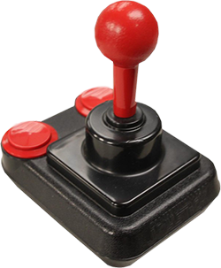
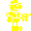

About The Archive
If you spot anything wrong, such as typos, inaccurate information, missing images, or if I have used content that you would like removed, please let me know in issues on my GitHub Repo and I will act swiftly.
The Sinclair ZX Spectrum was an important part of my childhood, and in 2001 I set out to build a website dedicated to the machine and the games I grew up with. The project was ambitious, but after two years of slow, laborious progress, I abandoned it. For the next 23 years it remained that way — a relic of early-2000s web design — until one day in April 2026, when I decided it was finally time to finish what I had started.
My original intention for the reboot was modest: complete the CRASH Smash section and call it a day. But once I began working, it became clear the site needed far more than a few updates. I had built the original pages using FrontPage 2000 on Windows 98 (or possibly XP), targeting a 1024×768 display and Internet Explorer 5/6. The HTML was a chaotic mess — font tags everywhere, random line breaks, and a structure that looked like it had been written as a practical joke. The web has changed dramatically since those days, and this project needed to change with it.
So I rebuilt the entire site from the ground up using modern HTML and CSS. Every page has been rebuilt manually in Notepad++, with a cleaner structure and a more maintainable layout. I’ll admit that I used AI for guidance at the start — I had never touched CSS before — but with a bit of Copilot coaching I quickly found my footing.
Although the site has been modernised, it intentionally preserves a late 90s, early 2000s feel — what I like to call “Web 1.5”. The layout now uses modern iframes instead of legacy framesets, but the multi-pane structure lives on as a tribute to the classic web. It’s a hybrid approach: contemporary HTML and CSS under the hood, with a Web 1.0 nostalgic skin that echoes the early days of the internet.
Back in 2001, the site existed mainly to accompany a folder I’d created containing ROMs, box art, instructions, and other stuff, all neatly organised to match the game lists on this site. Those lists originally linked to the instructions for the games stored in that folder — but the folder itself is now long gone. So, for this 2026 reboot, I decided to integrate everything directly into the site: box art, instructions, and even the ROMs themselves now live within each game page.
Because of this change, the game lists now point to magazine reviews rather than instructions. Each game page includes its own dedicated instructions anyway, so linking to them from the lists no longer made sense. CRASH Online became my primary source for reviews, though some titles are not covered there. For those, I created new reviews using OCR’d CRASH PDFs from RetroPDF, supplemented with material from Your Sinclair and Sinclair User.
Much of the written content remains my own, with additional information originally sourced from places like World of Spectrum, Rebelstar, and the now-obsolete WOS CD-ROM. The difference today is that I finally had the tools to complete the project properly. Copilot proved invaluable — generating PowerShell scripts, automating repetitive tasks, and handling work that would have been far too time-consuming (and soul-destroying) to do manually.
The final milestone was publishing the site through GitHub Pages. It wasn’t part of the original plan — not in 2001, and not even when I began the 2026 update — but it turned out to be the natural next step. After more than two decades, the project is no longer abandoned. It’s finally complete, modernised, and online.

Changes Made in the 2026 Reboot
• Rebuilt the entire site using modern HTML and CSS.• The site is now online via GitHub Pages, and even has a domain name.
• Changed all game links to magazine reviews, mainly from CRASH Online.
• Added box art, manuals and a playable game button to all game review pages.
• Box art is now clickable: click to expand, click again to return.
• Removed all greyed-out entries — every game now links to a magazine review.
• Removed Offline WOS archive, FAQ section, Pokes, and CRASH Scores pages.
• Removed all references to my old ROM and box-art folders.
• Removed most mentions of ZX32 — it’s outdated and better emulators now exist.
• Reformatted the About, Help and further reading sections for consistency.
• Added images where appropriate to the Further Reading sections.
• Updated and expanded the bookmarks on the home page, and removed dead links.
• Removed most external links across the site — only the home page now includes them.
• Renamed “My Games” to “The Toy Box” and added several more games.
• Fixed typos and polished dialogue, bringing my slightly juvenile writing style up to date.
• Now includes information on newer hardware and software where appropriate.
• Updated or replaced several images, including swapping out some low-resolution ones.
• Re-created all the animated GIF images myself from scratch.
• Added internet connection check for external web links.
• Added a mini-game — can you find the legendary hidden clearing?
Site Content
Within these pages you’ll find artwork, reviews, instructions, history, interviews, web links, and even the ability to play the games themselves. The site is divided into several sections, all accessible from the menu at the top of the page.
ZX Spectrum Archive Home - Main landing page. Includes information on the various ZX Spectrum models, and a lot more.
CRASH Smashes - Features games awarded a CRASH Smash by everyone’s favourite Speccy mag, with links to reviews.
Ultimate Play the Game - Focuses on the Spectrum titles created by Ultimate Play the Game.
The Toy Box - A hand picked collection of the games that I played as a child.
About - This page.
Help - General help and guidance for navigating and using this site.